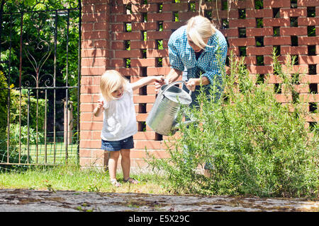

our recent posts

jan 3,2021
Lack of diverse, good-quality seeds curb tree-planting goals and reforestation plans
Ambitious plans by India, Malaysia, Indonesia and the Philippines to restore tens of millions of hectares of degraded land by 2030 could be derailed by a lack of good-quality and genetically diverse native seeds, according to a new study. Researchers, who surveyed tree restoration practitioners in the four countries, found a third of practitioners regularly planting seedlings of unknown origins, which can lead to their growing in unsuitable conditions and low survival rates.